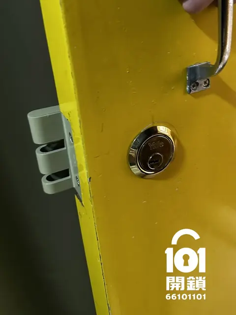
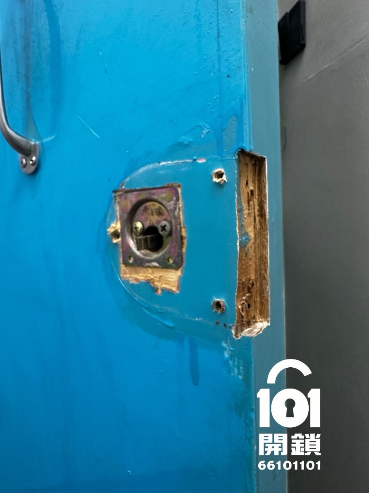
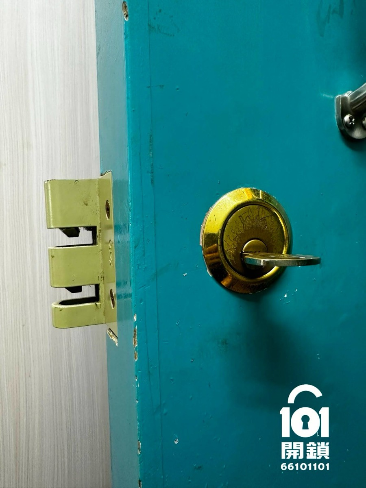
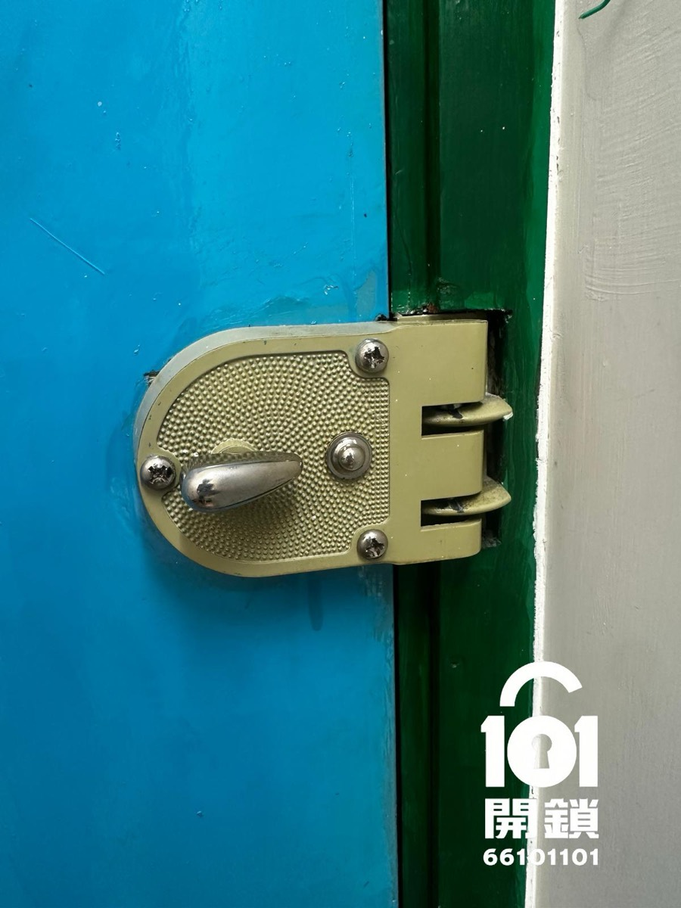
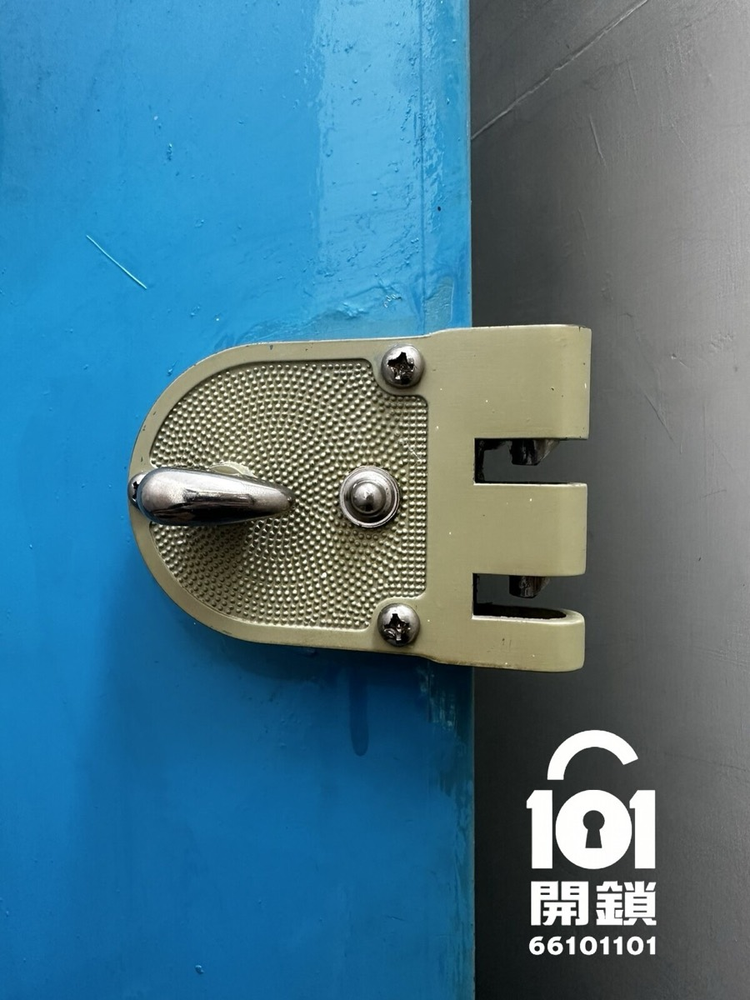
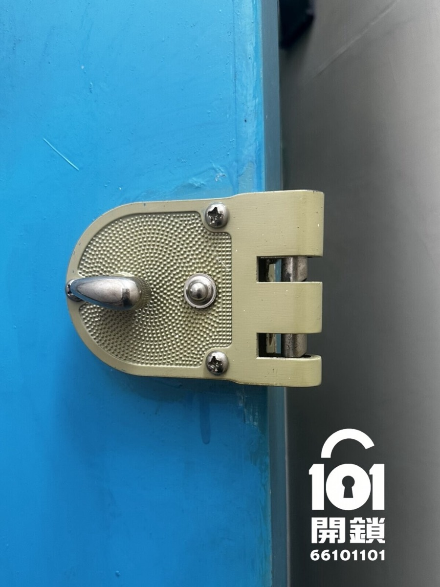
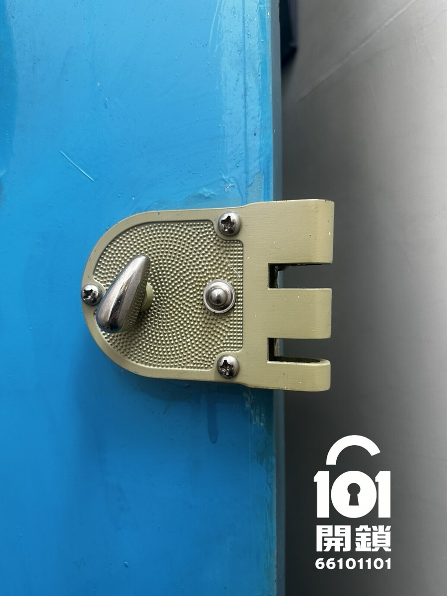

1. 門型與開門方向
木門、不鏽鋼門及防火門的結構不同；左開、右開與內外開亦會影響可選鎖體與安裝方向。拉門的結構一般未必適合改裝老虎鎖，須個別確認。
香港住宅與木門換鎖指南
老虎鎖常被用作三開鎖使用者的升級選擇，因為可保留三段鎖舌的使用習慣。但能否直換，必須先看門型、鎖距、原有開孔及門框狀況，不能只憑鎖名判斷。

「直換」是指在不大幅改動門身下安裝新鎖體；是否可行取決於實際門與鎖的尺寸，而不是單靠「三開鎖」這個名稱。
適合先考慮老虎鎖的情況：現有門已使用三段鎖舌結構、鎖體位置及門厚有足夠空間，並且鎖舌能與門框鎖扣對準。即使外觀相近，不同品牌或舊式門的開孔、左右手與鎖距也可能不同，建議先由鎖匠確認。
「老虎鎖」是市場上對這類三段鎖舌鎖體的常用稱呼，源於其鎖舌咬合結構給人如老虎般強悍的印象。部分型號可配硬化鋼條或防鋸鎖舌等配置，以提升抗破壞能力；實際保安效果仍取決於鎖體、鎖膽、門框及安裝質素，不能只看鎖名或宣傳字眼。
這三點正是影響老虎鎖安裝難度、能否少改門與最終報價的主要變數。
木門、不鏽鋼門及防火門的結構不同；左開、右開與內外開亦會影響可選鎖體與安裝方向。拉門的結構一般未必適合改裝老虎鎖，須個別確認。
60mm 鎖距及 32mm 開孔是老虎鎖常用規格，但並非所有老虎鎖的通用規格。鎖膽孔、手抽位置及門厚要一併核對。
換鎖後最重要是鎖舌準確入扣。若門框變形或有門鉸下墜問題，應先調整；不能只依靠換鎖去處理對位問題。
高保安功能並非每一款老虎鎖都有；選購時請以實際鎖膽、鎖體與施工方式為準。
這是選購與溝通清單，不是所有品牌或型號的固定規格。
| 比較項目 | 一般傳統三開鎖 | 老虎鎖 |
|---|---|---|
| 操作習慣 | 常見為斜舌加兩段方舌 | 多數為兩段操作 |
| 開鎖方式 | 可以鬼馬開鎖，即使使用再好的鎖膽，保護作用亦有限。 | 只可以技術開鎖，難度以鎖膽而定。 |
| 安裝兼容 | 舊門孔位與尺寸差異不大 | 相容時可較少改門；不相容時仍可能要改孔或調整門框 |
| 適合對象 | 原鎖仍順暢、沒有特別升級需要的使用者 | 希望保留三開鎖習慣，同時升級較高保安配置的使用者 |
手機可向左／右滑動查看完整比較表。
網上常見的尺寸只可作初步參考。由於老虎鎖規格會隨版子及型號不同，應以現有門鎖實量及新鎖說明為準。
先傳相作兼容性初步評估，再決定是否安排上門量度。
DIY 只適合熟悉門鎖結構、尺寸及門框對位的人士；一般住宅換鎖，較穩妥的做法是先確認兼容性。
確認門型、現有鎖類及是否有明顯變形、磨損或卡鎖問題。
核對鎖距、門厚、開孔與鎖膽長度，購買合適的老虎鎖。
完成後，確認鎖膽可暢順帶動開門及鎖門，並檢查門框鎖扣是否順暢對位。
安裝完成後，應檢查鎖膽、鎖口及鎖體是否固定穩妥，並確認開門及鎖門動作暢順。



以下為同一把老虎鎖安裝後的門鎖狀態實拍，展示正常、反鎖及垃圾制生效時的鎖體位置。



如門況特殊或屬防火門，請以相關管理要求為準。
不一定。雖然部分老虎鎖可配合三段鎖舌結構，但門型、開門方向、鎖距、舊孔位、門厚及門框鎖扣都會影響。先看相或量度，才可確認是否直換。
建議傳：① 打開門後室外的門鎖照片、② 打開門後的門邊鎖體照片、③ 打開門後的室內門鎖照片。相片能加快初步評估及報價。
不是。老虎鎖與電子鎖解決的是不同需要：前者較適合希望保留機械鎖及三開鎖操作習慣的人；電子鎖則著重無匙、密碼或出入管理。選擇前應先看門況、使用者需要及預算。
安裝前先確認
傳門鎖相片作兼容性初步評估，確認適合後再安排上門量度，避免不必要的改門工程。